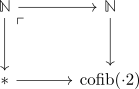
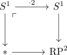

cofiber of multiplication by two of N in monoids in anima is loop space of RP^2
Proposition
Let $\cdot 2: \mathbb{N} \rightarrow \mathbb{N}$ be the multiplication with $2$ map. Then the cofiber in anima valued monoids is given by
Proof
We need to compute the cofiber

Recall that an anima valued monoid is a group if and only if $\pi_0(-)$ is a group (cf. anima valued group and pi_0 is a group). Moreover, pi_0 induces an adjunction on anima valued monoids and set valued monoids where $\pi_0$ is a left adjoint. So we get $\pi_0(\mathrm{cofib}(\cdot 2)) \cong \mathbb{Z}/2 \mathbb{Z}$, i.e. $\mathrm{cofib}(\cdot 2)$ is an anima valued group as pi_0 is a group.
Hence we may group complete and compute the pushout in anima valued groups, i.e., we get infinite group completion of the natural numbers are the integers
But using the recognition principle for anima valued groups and connected pointed animas this diagram can be rephrased as

where the cofiber is $\mathrm{RP}^2$.
I.e., $\mathrm{cofib}(\mathbb{N} \xrightarrow{\cdot 2} \mathbb{N}) = \Omega \mathbb{R}\mathbb{P}^2$ (cf. weakly contractible colimit in anima valued groups and delooping).